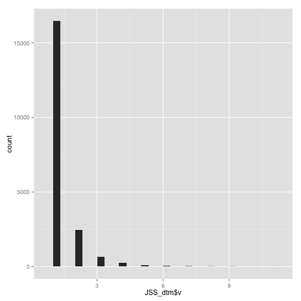

Topicmodeling:
Abstracts of JSS papers
Get Data
#install.packages("corpus.JSS.papers", repos = "http://datacube.wu.ac.at/", type = "source")
data("JSS_papers", package = "corpus.JSS.papers")
For reproducibility of results we use only abstracts published up to 2010-08-05 and omit those containing non-ASCII characters in the abstracts.
JSS_papers <- JSS_papers[JSS_papers[,"date"] < "2010-08-05",];dim(JSS_papers)
## [1] 361 15
JSS_papers <- JSS_papers[sapply(JSS_papers[, "description"],Encoding) == "unknown",];dim(JSS_papers)
## [1] 348 15
dim(JSS_papers)
## [1] 348 15
prod(dim(JSS_papers))
## [1] 5220
The final data set contains 348 documents. Before analysis we transform it to a Corpus using package tm.
HTML markup in the abstracts for greek letters, subscripting, etc., is removed using package XML
library("tm")
library("XML")
library("ggplot2")
Create function to remove HTML Markup
remove_HTML_markup <- function(s) tryCatch({
doc <- htmlTreeParse(paste("<!DOCTYPE html>", s), asText = TRUE, trim = FALSE)
xmlValue(xmlRoot(doc))
}, error = function(s) s)
#JSS_papers[, "description"][1]
#sapply(JSS_papers[, "description"][1],remove_HTML_markup)
#VectorSource(sapply(JSS_papers[, "description"][1],remove_HTML_markup))
#c <- Corpus(VectorSource(sapply(JSS_papers[, "description"][1],remove_HTML_markup)));c
corpus <- Corpus(VectorSource(sapply(JSS_papers[, "description"],remove_HTML_markup)));corpus
## <<VCorpus (documents: 348, metadata (corpus/indexed): 0/0)>>
attributes(corpus)
## $names
## [1] "content" "meta" "dmeta"
##
## $class
## [1] "VCorpus" "Corpus"
class(corpus)
## [1] "VCorpus" "Corpus"
mode(corpus)
## [1] "list"
The corpus is exported to a document-term matrix using function DocumentTermMatrix() from package tm. The terms are stemmed and the stop words, punctuation, numbers and terms of length less than 3 are removed using the control argument. (We use a C locale for reproducibility.)
Some details about Locale
locale describes aspects of the internationalization of a program. Initially most aspects of the locale of R are set to "C" (which is the default for the C language and reflects North-American usage). R sets LC_CTYPE and LC_COLLATE, which allows the use of a different character set and alphabetic comparisons in that character set (including the use of sort), LC_MONETARY (for use by Sys.localeconv) and LC_TIME may affect the behaviour of as.POSIXlt and strptime and functions which use them (but not date).
Sys.setlocale("LC_COLLATE", "C")
## [1] "C"
Document Term Matrix : Requires SnowballC library. Install if it is not already installed
JSS_dtm <- DocumentTermMatrix(corpus, control = list(stemming = FALSE,
stopwords = TRUE,
minWordLength = 3,
removeNumbers = TRUE,
removePunctuation = TRUE));JSS_dtm
## <<DocumentTermMatrix (documents: 348, terms: 5022)>>
## Non-/sparse entries: 20034/1727622
## Sparsity : 99%
## Maximal term length: 36
## Weighting : term frequency (tf)
Structure of Document Term Matrix.
str(JSS_dtm)
## List of 6
## $ i : int [1:20034] 1 1 1 1 1 1 1 1 1 1 ...
## $ j : int [1:20034] 139 289 565 842 902 1073 1189 1215 1236 1577 ...
## $ v : num [1:20034] 1 1 1 1 1 3 1 2 1 1 ...
## $ nrow : int 348
## $ ncol : int 5022
## $ dimnames:List of 2
## ..$ Docs : chr [1:348] "1" "2" "3" "4" ...
## ..$ Terms: chr [1:5022] "abc" "abilities" "ability" "able" ...
## - attr(*, "class")= chr [1:2] "DocumentTermMatrix" "simple_triplet_matrix"
## - attr(*, "weighting")= chr [1:2] "term frequency" "tf"
Variables in the dtm
names(JSS_dtm)
## [1] "i" "j" "v" "nrow" "ncol" "dimnames"
Class
class(JSS_dtm)
## [1] "DocumentTermMatrix" "simple_triplet_matrix"
Mode
mode(JSS_dtm)
## [1] "list"
Document term Martix
JSS_dtm # all documents & All terms
## <<DocumentTermMatrix (documents: 348, terms: 5022)>>
## Non-/sparse entries: 20034/1727622
## Sparsity : 99%
## Maximal term length: 36
## Weighting : term frequency (tf)
JSS_dtm[1,] # 1st Document and all terms
## <<DocumentTermMatrix (documents: 1, terms: 5022)>>
## Non-/sparse entries: 39/4983
## Sparsity : 99%
## Maximal term length: 36
## Weighting : term frequency (tf)
JSS_dtm[,1] # All documents and First term
## <<DocumentTermMatrix (documents: 348, terms: 1)>>
## Non-/sparse entries: 1/347
## Sparsity : 100%
## Maximal term length: 3
## Weighting : term frequency (tf)
JSS_dtm$nrow; # Documents
## [1] 348
JSS_dtm$ncol # Terms
## [1] 5022
Document
length(JSS_dtm$i)
## [1] 20034
range(JSS_dtm$i)
## [1] 1 348
Term
length(JSS_dtm$j)
## [1] 20034
range(JSS_dtm$j)
## [1] 1 5022
Frequency
length(JSS_dtm$v)
## [1] 20034
range(JSS_dtm$v)
## [1] 1 11
Number of terms whose frequency is 0
sum(JSS_dtm$v == 0)
## [1] 0
Number of terms whose frequency is 1
sum(JSS_dtm$v == 1)
## [1] 16465
Number of terms with frequency 13
sum(JSS_dtm$v == 13)
## [1] 0
Number of terms with frequency 14
sum(JSS_dtm$v == 14)
## [1] 0
plot of frequencies
qplot(JSS_dtm$v)
## stat_bin: binwidth defaulted to range/30. Use 'binwidth = x' to adjust this.

mean term frequency-inverse document frequency (tf-idf) over documents containing this term is used to select the vocabulary. This measure allows to omit terms which have low frequency as well as those occurring in many documents. We only include terms which have a tf-idf value of at least 0.1 which is a bit more than the median and ensures that the very frequent terms are omitted.
slam: Sparse Lightweight Arrays and Matrices
Data structures and algorithms for sparse arrays and matrices, based on index arrays and simple triplet representations, respectively.
Load Slam package
library("slam")
col_sums: Form row and column sums and means for sparse arrays (currently simple_triplet_matrix only).
#?col_sums
rows is the documents
columns are the terms
Gives terms and their frequencies
JSS_dtm$ncol
## [1] 5022
length(col_sums(JSS_dtm))
## [1] 5022
length(JSS_dtm$j)
## [1] 20034
length(JSS_dtm$v)
## [1] 20034
JSS_dtm$nrow
## [1] 348
JSS_dtm
## <<DocumentTermMatrix (documents: 348, terms: 5022)>>
## Non-/sparse entries: 20034/1727622
## Sparsity : 99%
## Maximal term length: 36
## Weighting : term frequency (tf)
head(col_sums(JSS_dtm))
## abc abilities ability able absence absolute
## 1 1 9 10 1 5
str(col_sums(JSS_dtm))
## Named num [1:5022] 1 1 9 10 1 5 2 1 3 2 ...
## - attr(*, "names")= chr [1:5022] "abc" "abilities" "ability" "able" ...
class(col_sums(JSS_dtm))
## [1] "numeric"
Distribution of term frequencies - Skewed
summary(col_sums(JSS_dtm))
## Min. 1st Qu. Median Mean 3rd Qu. Max.
## 1.000 1.000 2.000 5.084 4.000 389.000
qplot(col_sums(JSS_dtm))
## stat_bin: binwidth defaulted to range/30. Use 'binwidth = x' to adjust this.
The mean term frequency-inverse document frequency (tf-idf) over documents containing this term is used to select the vocabulary. This measure allows to omit terms which have low frequency as well as those occurring in many documents. We only include terms which have a tf-idf value of at least 0.1 which is a bit more than the median and ensures that the very frequent terms are omitted.
term_tfidf <-
tapply(JSS_dtm$v/row_sums(JSS_dtm)[JSS_dtm$i],
JSS_dtm$j, mean) * log2(nDocs(JSS_dtm)/col_sums(JSS_dtm > 0))
str(term_tfidf)
## num [1:5022(1d)] 0.1624 0.097 0.0641 0.0791 0.0545 ...
## - attr(*, "dimnames")=List of 1
## ..$ : chr [1:5022] "1" "2" "3" "4" ...
length(term_tfidf)
## [1] 5022
class(term_tfidf)
## [1] "array"
#attributes(term_tfidf)
head(term_tfidf)
## 1 2 3 4 5 6
## 0.16236430 0.09704533 0.06413909 0.07907440 0.05447060 0.07900995
Distribution - Slightly less skewed
summary(term_tfidf)
## Min. 1st Qu. Median Mean 3rd Qu. Max.
## 0.02285 0.07746 0.09933 0.12220 0.13620 1.16500
qplot(term_tfidf)
## stat_bin: binwidth defaulted to range/30. Use 'binwidth = x' to adjust this.
dim(JSS_dtm)
## [1] 348 5022
length(term_tfidf)
## [1] 5022
sum(term_tfidf >= 0.1)
## [1] 2497
JSS_dtm <- JSS_dtm[,term_tfidf >= 0.1];
JSS_dtm$nrow
## [1] 348
JSS_dtm <- JSS_dtm[row_sums(JSS_dtm) > 0,]
JSS_dtm$nrow
## [1] 348
summary(col_sums(JSS_dtm))
## Min. 1st Qu. Median Mean 3rd Qu. Max.
## 1.000 1.000 1.000 2.687 3.000 35.000
JSS_dtm
## <<DocumentTermMatrix (documents: 348, terms: 2497)>>
## Non-/sparse entries: 4648/864308
## Sparsity : 99%
## Maximal term length: 36
## Weighting : term frequency (tf)
summary(col_sums(JSS_dtm)) # 1 - 47
## Min. 1st Qu. Median Mean 3rd Qu. Max.
## 1.000 1.000 1.000 2.687 3.000 35.000
qplot(col_sums(JSS_dtm))
## stat_bin: binwidth defaulted to range/30. Use 'binwidth = x' to adjust this.
library("topicmodels")
k <- 30
SEED <- 2010
jss_TM <- list(
VEM = LDA(JSS_dtm, k = k, control = list(seed = SEED)),
VEM_fixed = LDA(JSS_dtm, k = k,
control = list(estimate.alpha = FALSE, seed = SEED)),
Gibbs = LDA(JSS_dtm, k = k, method = "Gibbs",
control = list(seed = SEED, burnin = 1000,
thin = 100, iter = 1000)),
CTM = CTM(JSS_dtm, k = k,
control = list(seed = SEED,
var = list(tol = 10^-4),
em = list(tol = 10^-3)))
)
str(jss_TM$VEM)
## Formal class 'LDA_VEM' [package "topicmodels"] with 14 slots
## ..@ alpha : num 0.0076
## ..@ call : language LDA(x = JSS_dtm, k = k, control = list(seed = SEED))
## ..@ Dim : int [1:2] 348 2497
## ..@ control :Formal class 'LDA_VEMcontrol' [package "topicmodels"] with 13 slots
## .. .. ..@ estimate.alpha: logi TRUE
## .. .. ..@ alpha : num 1.67
## .. .. ..@ seed : int 2010
## .. .. ..@ verbose : int 0
## .. .. ..@ prefix : chr "/var/folders/zv/8qg2z4351cj76wbbjspsr0h80000gn/T//RtmppVdTzD/file79d089743c8"
## .. .. ..@ save : int 0
## .. .. ..@ nstart : int 1
## .. .. ..@ best : logi TRUE
## .. .. ..@ keep : int 0
## .. .. ..@ estimate.beta : logi TRUE
## .. .. ..@ var :Formal class 'OPTcontrol' [package "topicmodels"] with 2 slots
## .. .. .. .. ..@ iter.max: int 500
## .. .. .. .. ..@ tol : num 1e-06
## .. .. ..@ em :Formal class 'OPTcontrol' [package "topicmodels"] with 2 slots
## .. .. .. .. ..@ iter.max: int 1000
## .. .. .. .. ..@ tol : num 1e-04
## .. .. ..@ initialize : chr "random"
## ..@ k : int 30
## ..@ terms : chr [1:2497] "abc" "absorbance" "abundance" "abundant" ...
## ..@ documents : chr [1:348] "1" "2" "3" "4" ...
## ..@ beta : num [1:30, 1:2497] -232 -362 -232 -232 -362 ...
## ..@ gamma : num [1:348, 1:30] 0.000441 0.000677 0.000499 0.000534 0.000101 ...
## ..@ wordassignments:List of 5
## .. ..$ i : int [1:4648] 1 1 1 1 1 1 1 1 1 1 ...
## .. ..$ j : int [1:4648] 427 453 614 802 1102 1321 1544 1561 1629 1727 ...
## .. ..$ v : num [1:4648] 7 7 7 7 7 7 7 7 7 7 ...
## .. ..$ nrow: int 348
## .. ..$ ncol: int 2497
## .. ..- attr(*, "class")= chr "simple_triplet_matrix"
## ..@ loglikelihood : num [1:348] -82.6 -61.6 -102.1 -58.8 -276.9 ...
## ..@ iter : int 75
## ..@ logLiks : num(0)
## ..@ n : int 6709
jss_TM$VEM@alpha
## [1] 0.007597997
str(jss_TM$VEM_fixed)
## Formal class 'LDA_VEM' [package "topicmodels"] with 14 slots
## ..@ alpha : num 1.67
## ..@ call : language LDA(x = JSS_dtm, k = k, control = list(estimate.alpha = FALSE, seed = SEED))
## ..@ Dim : int [1:2] 348 2497
## ..@ control :Formal class 'LDA_VEMcontrol' [package "topicmodels"] with 13 slots
## .. .. ..@ estimate.alpha: logi FALSE
## .. .. ..@ alpha : num 1.67
## .. .. ..@ seed : int 2010
## .. .. ..@ verbose : int 0
## .. .. ..@ prefix : chr "/var/folders/zv/8qg2z4351cj76wbbjspsr0h80000gn/T//RtmppVdTzD/file79d0613689b"
## .. .. ..@ save : int 0
## .. .. ..@ nstart : int 1
## .. .. ..@ best : logi TRUE
## .. .. ..@ keep : int 0
## .. .. ..@ estimate.beta : logi TRUE
## .. .. ..@ var :Formal class 'OPTcontrol' [package "topicmodels"] with 2 slots
## .. .. .. .. ..@ iter.max: int 500
## .. .. .. .. ..@ tol : num 1e-06
## .. .. ..@ em :Formal class 'OPTcontrol' [package "topicmodels"] with 2 slots
## .. .. .. .. ..@ iter.max: int 1000
## .. .. .. .. ..@ tol : num 1e-04
## .. .. ..@ initialize : chr "random"
## ..@ k : int 30
## ..@ terms : chr [1:2497] "abc" "absorbance" "abundance" "abundant" ...
## ..@ documents : chr [1:348] "1" "2" "3" "4" ...
## ..@ beta : num [1:30, 1:2497] -35.2 -37.6 -36.9 -37.6 -42.8 ...
## ..@ gamma : num [1:348, 1:30] 0.0249 0.0277 0.0266 0.0264 0.0134 ...
## ..@ wordassignments:List of 5
## .. ..$ i : int [1:4648] 1 1 1 1 1 1 1 1 1 1 ...
## .. ..$ j : int [1:4648] 427 453 614 802 1102 1321 1544 1561 1629 1727 ...
## .. ..$ v : num [1:4648] 7 7 7 7 7 7 7 7 7 7 ...
## .. ..$ nrow: int 348
## .. ..$ ncol: int 2497
## .. ..- attr(*, "class")= chr "simple_triplet_matrix"
## ..@ loglikelihood : num [1:348] -109.9 -77.5 -104.7 -83.3 -343.8 ...
## ..@ iter : int 20
## ..@ logLiks : num(0)
## ..@ n : int 6709
str(jss_TM$Gibbs)
## Formal class 'LDA_Gibbs' [package "topicmodels"] with 16 slots
## ..@ seedwords : NULL
## ..@ z : int [1:6709] 1 2 30 30 5 20 5 8 28 6 ...
## ..@ alpha : num 1.67
## ..@ call : language LDA(x = JSS_dtm, k = k, method = "Gibbs", control = list(seed = SEED, burnin = 1000, thin = 100, iter = 1000))
## ..@ Dim : int [1:2] 348 2497
## ..@ control :Formal class 'LDA_Gibbscontrol' [package "topicmodels"] with 14 slots
## .. .. ..@ delta : num 0.1
## .. .. ..@ iter : int 100
## .. .. ..@ thin : int 100
## .. .. ..@ burnin : int 1000
## .. .. ..@ initialize : chr "random"
## .. .. ..@ alpha : num 1.67
## .. .. ..@ seed : int 2010
## .. .. ..@ verbose : int 0
## .. .. ..@ prefix : chr "/var/folders/zv/8qg2z4351cj76wbbjspsr0h80000gn/T//RtmppVdTzD/file79d04057303d"
## .. .. ..@ save : int 0
## .. .. ..@ nstart : int 1
## .. .. ..@ best : logi TRUE
## .. .. ..@ keep : int 0
## .. .. ..@ estimate.beta: logi TRUE
## ..@ k : int 30
## ..@ terms : chr [1:2497] "abc" "absorbance" "abundance" "abundant" ...
## ..@ documents : chr [1:348] "1" "2" "3" "4" ...
## ..@ beta : num [1:30, 1:2497] -8.4 -8.42 -8.53 -8.57 -8.48 ...
## ..@ gamma : num [1:348, 1:30] 0.0398 0.0437 0.041 0.026 0.0133 ...
## ..@ wordassignments:List of 5
## .. ..$ i : int [1:4648] 1 1 1 1 1 1 1 1 1 1 ...
## .. ..$ j : int [1:4648] 427 453 614 802 1102 1321 1544 1561 1629 1727 ...
## .. ..$ v : num [1:4648] 1 2 30 5 20 5 8 28 6 23 ...
## .. ..$ nrow: int 348
## .. ..$ ncol: int 2497
## .. ..- attr(*, "class")= chr "simple_triplet_matrix"
## ..@ loglikelihood : num -45930
## ..@ iter : int 100
## ..@ logLiks : num(0)
## ..@ n : int 6709
str(jss_TM$CTM)
## Formal class 'CTM_VEM' [package "topicmodels"] with 16 slots
## ..@ nusquared : num [1:348, 1:29] 3.87 3.98 3.34 4.15 3.42 ...
## ..@ mu : num [1:29] -0.224 -0.311 -0.925 -0.106 -0.66 ...
## ..@ Sigma : num [1:29, 1:29] 5.4069 -0.0603 -0.0741 -0.0615 -0.0602 ...
## ..@ call : language CTM(x = JSS_dtm, k = k, control = list(seed = SEED, var = list(tol = 10^-4), em = list(tol = 10^-3)))
## ..@ Dim : int [1:2] 348 2497
## ..@ control :Formal class 'CTM_VEMcontrol' [package "topicmodels"] with 12 slots
## .. .. ..@ cg :Formal class 'OPTcontrol' [package "topicmodels"] with 2 slots
## .. .. .. .. ..@ iter.max: int 500
## .. .. .. .. ..@ tol : num 1e-05
## .. .. ..@ seed : int 2010
## .. .. ..@ verbose : int 0
## .. .. ..@ prefix : chr "/var/folders/zv/8qg2z4351cj76wbbjspsr0h80000gn/T//RtmppVdTzD/file79d07e76d0d9"
## .. .. ..@ save : int 0
## .. .. ..@ nstart : int 1
## .. .. ..@ best : logi TRUE
## .. .. ..@ keep : int 0
## .. .. ..@ estimate.beta: logi TRUE
## .. .. ..@ var :Formal class 'OPTcontrol' [package "topicmodels"] with 2 slots
## .. .. .. .. ..@ iter.max: int 500
## .. .. .. .. ..@ tol : num 1e-04
## .. .. ..@ em :Formal class 'OPTcontrol' [package "topicmodels"] with 2 slots
## .. .. .. .. ..@ iter.max: int 1000
## .. .. .. .. ..@ tol : num 0.001
## .. .. ..@ initialize : chr "rand"
## ..@ k : int 30
## ..@ terms : chr [1:2497] "abc" "absorbance" "abundance" "abundant" ...
## ..@ documents : chr [1:348] "1" "2" "3" "4" ...
## ..@ beta : num [1:30, 1:2497] -73.9 -73.6 -90.8 -72.9 -81 ...
## ..@ gamma : num [1:348, 1:30] 0.00061 0.000843 0.001718 0.00047 0.000244 ...
## ..@ wordassignments:List of 5
## .. ..$ i : int [1:4648] 1 1 1 1 1 1 1 1 1 1 ...
## .. ..$ j : int [1:4648] 427 453 614 802 1102 1321 1544 1561 1629 1727 ...
## .. ..$ v : num [1:4648] 25 25 25 25 25 25 25 25 25 25 ...
## .. ..$ nrow: int 348
## .. ..$ ncol: int 2497
## .. ..- attr(*, "class")= chr "simple_triplet_matrix"
## ..@ loglikelihood : num [1:348] -91.6 -65 -100.2 -67.9 -305.9 ...
## ..@ iter : int 19
## ..@ logLiks : num(0)
## ..@ n : int 6709
jss_TM$VEM@alpha
## [1] 0.007597997
jss_TM$VEM_fixed@alpha
## [1] 1.666667
terms(jss_TM$VEM)
## Topic 1 Topic 2 Topic 3 Topic 4
## "bayes" "item" "ordinal" "genetic"
## Topic 5 Topic 6 Topic 7 Topic 8
## "formulae" "imputation" "zeroinflated" "conditional"
## Topic 9 Topic 10 Topic 11 Topic 12
## "tree" "control" "robust" "estimators"
## Topic 13 Topic 14 Topic 15 Topic 16
## "polyk" "socr" "roc" "power"
## Topic 17 Topic 18 Topic 19 Topic 20
## "conditional" "www" "wavelet" "fields"
## Topic 21 Topic 22 Topic 23 Topic 24
## "confidence" "network" "winbugs" "autoregressive"
## Topic 25 Topic 26 Topic 27 Topic 28
## "density" "longitudinal" "clustering" "choice"
## Topic 29 Topic 30
## "generators" "smoothing"
terms(jss_TM$VEM_fixed)
## Topic 1 Topic 2 Topic 3 Topic 4 Topic 5
## "patterns" "item" "ordinal" "matrices" "formulae"
## Topic 6 Topic 7 Topic 8 Topic 9 Topic 10
## "imputation" "graphs" "kernel" "dose" "control"
## Topic 11 Topic 12 Topic 13 Topic 14 Topic 15
## "robust" "estimators" "original" "xlispstat" "curve"
## Topic 16 Topic 17 Topic 18 Topic 19 Topic 20
## "samples" "conditional" "www" "wavelet" "fields"
## Topic 21 Topic 22 Topic 23 Topic 24 Topic 25
## "confidence" "network" "winbugs" "vector" "density"
## Topic 26 Topic 27 Topic 28 Topic 29 Topic 30
## "longitudinal" "clustering" "choice" "generators" "smoothing"
terms(jss_TM$Gibbs)
## Topic 1 Topic 2 Topic 3 Topic 4 Topic 5
## "wavelet" "vector" "item" "density" "population"
## Topic 6 Topic 7 Topic 8 Topic 9 Topic 10
## "procedure" "graph" "winbugs" "mathematical" "gui"
## Topic 11 Topic 12 Topic 13 Topic 14 Topic 15
## "network" "clustering" "graphs" "file" "gamlss"
## Topic 16 Topic 17 Topic 18 Topic 19 Topic 20
## "power" "lispstat" "control" "robust" "designs"
## Topic 21 Topic 22 Topic 23 Topic 24 Topic 25
## "choice" "risk" "java" "matrices" "theoretical"
## Topic 26 Topic 27 Topic 28 Topic 29 Topic 30
## "confidence" "trees" "socr" "copulas" "estimators"
terms(jss_TM$CTM)
## Topic 1 Topic 2 Topic 3 Topic 4 Topic 5
## "robust" "matrices" "www" "kernel" "imputation"
## Topic 6 Topic 7 Topic 8 Topic 9 Topic 10
## "criterion" "polyk" "vista" "clustering" "zeroinflated"
## Topic 11 Topic 12 Topic 13 Topic 14 Topic 15
## "lispstat" "text" "file" "volume" "socr"
## Topic 16 Topic 17 Topic 18 Topic 19 Topic 20
## "control" "winbugs" "hydra" "generators" "graphs"
## Topic 21 Topic 22 Topic 23 Topic 24 Topic 25
## "designs" "confidence" "projection" "network" "microarray"
## Topic 26 Topic 27 Topic 28 Topic 29 Topic 30
## "population" "wavelet" "item" "estimators" "mathematical"
topics(jss_TM$VEM)
## 1 2 3 4 5 6 7 8 9 10 11 12 13 14 15 16 17 18
## 7 2 28 27 18 1 18 23 21 12 17 7 15 8 24 19 15 18
## 19 20 21 22 23 24 25 26 27 28 29 30 31 32 33 34 35 36
## 11 25 16 7 22 1 1 16 12 21 25 30 5 18 5 9 30 25
## 37 38 39 40 41 42 43 44 45 46 47 48 49 50 51 52 53 54
## 14 19 21 28 24 29 22 17 16 3 25 4 13 7 13 28 21 19
## 55 56 57 58 59 60 61 62 63 64 65 66 67 68 69 70 71 72
## 17 15 8 26 6 10 18 14 20 28 15 28 16 19 23 2 24 3
## 73 74 75 76 77 78 79 80 81 82 83 84 85 86 87 88 89 90
## 30 6 1 1 1 18 4 10 16 8 11 11 11 8 2 5 28 20
## 91 92 93 94 95 96 97 98 99 100 101 102 103 104 105 106 107 108
## 28 5 9 8 12 14 25 15 29 24 13 28 18 6 16 19 25 26
## 109 110 111 112 113 114 115 116 117 118 119 120 121 122 123 124 125 126
## 13 22 28 19 25 9 3 20 28 25 7 30 8 6 6 27 25 22
## 127 128 129 130 131 132 133 134 135 136 137 138 139 140 141 142 143 144
## 17 10 20 11 13 22 23 12 16 28 16 8 19 10 2 5 4 7
## 145 146 147 148 149 150 151 152 153 154 155 156 157 158 159 160 161 162
## 12 16 8 13 12 8 5 2 6 14 8 18 22 17 8 26 5 29
## 163 164 165 166 167 168 169 170 171 172 173 174 175 176 177 178 179 180
## 11 22 27 27 29 1 28 7 6 19 6 10 8 2 10 5 21 2
## 181 182 183 184 185 186 187 188 189 190 191 192 193 194 195 196 197 198
## 20 14 5 1 17 14 16 21 13 16 26 9 2 23 26 6 2 3
## 199 200 201 202 203 204 205 206 207 208 209 210 211 212 213 214 215 216
## 26 29 4 19 23 16 3 10 9 12 19 23 30 22 14 23 16 15
## 217 218 219 220 221 222 223 224 225 226 227 228 229 230 231 232 233 234
## 20 29 15 9 10 7 21 23 25 6 20 8 14 8 27 15 27 8
## 235 236 237 238 239 240 241 242 243 244 245 246 247 248 249 250 251 252
## 20 30 2 8 30 22 12 11 22 10 22 27 27 3 22 7 22 13
## 253 254 255 256 257 258 259 260 261 262 263 264 265 266 267 268 269 270
## 4 5 5 5 1 12 2 11 24 24 12 29 30 7 14 24 11 9
## 271 272 273 274 275 276 277 278 279 280 281 282 283 284 285 286 287 288
## 20 22 11 17 9 2 14 4 25 25 14 2 3 15 16 30 24 23
## 289 290 291 292 293 294 295 296 297 298 299 300 301 302 303 304 305 306
## 26 14 9 16 30 30 15 13 3 23 22 20 20 26 29 3 30 8
## 307 308 309 310 311 312 313 314 315 316 317 318 319 320 321 322 323 324
## 19 30 9 28 30 1 15 25 11 23 6 28 18 22 7 27 26 29
## 325 326 327 328 329 330 331 332 333 334 335 336 337 338 339 340 341 342
## 19 4 13 20 2 10 9 3 23 28 11 30 26 12 17 27 3 13
## 343 344 345 346 347 348
## 24 20 26 12 7 2
terms(jss_TM$VEM_fixed)
## Topic 1 Topic 2 Topic 3 Topic 4 Topic 5
## "patterns" "item" "ordinal" "matrices" "formulae"
## Topic 6 Topic 7 Topic 8 Topic 9 Topic 10
## "imputation" "graphs" "kernel" "dose" "control"
## Topic 11 Topic 12 Topic 13 Topic 14 Topic 15
## "robust" "estimators" "original" "xlispstat" "curve"
## Topic 16 Topic 17 Topic 18 Topic 19 Topic 20
## "samples" "conditional" "www" "wavelet" "fields"
## Topic 21 Topic 22 Topic 23 Topic 24 Topic 25
## "confidence" "network" "winbugs" "vector" "density"
## Topic 26 Topic 27 Topic 28 Topic 29 Topic 30
## "longitudinal" "clustering" "choice" "generators" "smoothing"
terms(jss_TM$Gibbs)
## Topic 1 Topic 2 Topic 3 Topic 4 Topic 5
## "wavelet" "vector" "item" "density" "population"
## Topic 6 Topic 7 Topic 8 Topic 9 Topic 10
## "procedure" "graph" "winbugs" "mathematical" "gui"
## Topic 11 Topic 12 Topic 13 Topic 14 Topic 15
## "network" "clustering" "graphs" "file" "gamlss"
## Topic 16 Topic 17 Topic 18 Topic 19 Topic 20
## "power" "lispstat" "control" "robust" "designs"
## Topic 21 Topic 22 Topic 23 Topic 24 Topic 25
## "choice" "risk" "java" "matrices" "theoretical"
## Topic 26 Topic 27 Topic 28 Topic 29 Topic 30
## "confidence" "trees" "socr" "copulas" "estimators"
terms(jss_TM$CTM)
## Topic 1 Topic 2 Topic 3 Topic 4 Topic 5
## "robust" "matrices" "www" "kernel" "imputation"
## Topic 6 Topic 7 Topic 8 Topic 9 Topic 10
## "criterion" "polyk" "vista" "clustering" "zeroinflated"
## Topic 11 Topic 12 Topic 13 Topic 14 Topic 15
## "lispstat" "text" "file" "volume" "socr"
## Topic 16 Topic 17 Topic 18 Topic 19 Topic 20
## "control" "winbugs" "hydra" "generators" "graphs"
## Topic 21 Topic 22 Topic 23 Topic 24 Topic 25
## "designs" "confidence" "projection" "network" "microarray"
## Topic 26 Topic 27 Topic 28 Topic 29 Topic 30
## "population" "wavelet" "item" "estimators" "mathematical"
?LDA
Discuss